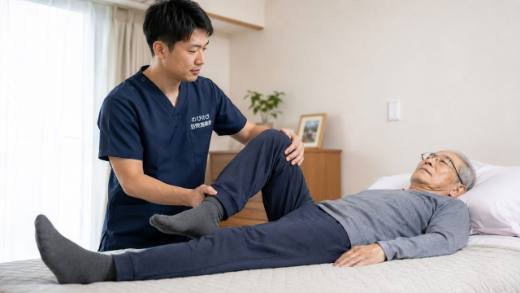
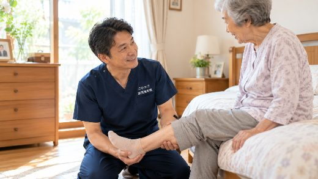
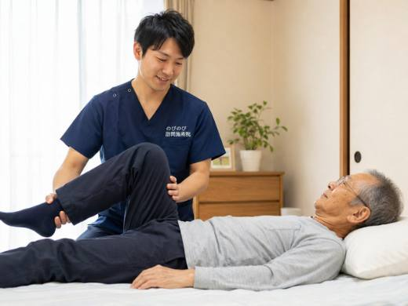
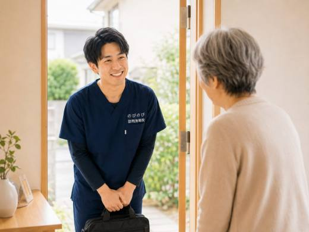
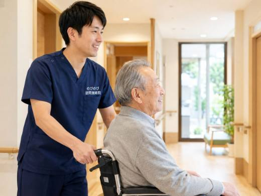

椅子から立ち上がる一瞬、膝がズキッと痛む。階段の下りがこわい。座っていても膝がうずく。高齢の方にとって膝の痛みは、「動きたくない」を生む大きな理由のひとつです。痛みをこらえて出かけるのが億劫になり、通院そのものが重荷になっていきます。ここでは、そうした膝の痛みに訪問鍼灸マッサージができること・できないこと、まず病院へ向かうべきサイン、費用のことまでを、施術の現場からお伝えします。
要点から。膝の痛みで立ち座りがつらいとき、訪問鍼灸マッサージでは膝まわりや太もものこわばりを和らげ、血のめぐりを促し、動かしやすさを保つ補助が期待できます。医師の同意にもとづく医療保険（はり・きゅう）を使い、国家資格者が自宅へ伺います。総額3,950円で、自己負担は1割の方が1回およそ395円。介護保険の限度額とは別枠です。ただし急に大きく腫れて熱をもつ、水がたまる、転んだあとの膝、体重をかけられないほど痛むときは、まず整形外科へ。変形そのものを治すものではなく、個人差があります。
高齢の方の膝の痛みは、こじれると生活を狭める
椅子から腰を上げる一瞬、膝の内側にズキッと走る。階段は上りより下りがこわい。正座ができなくなり、朝いちばんの歩き始めだけ痛む。年齢とともに増える膝の痛みは、こんなふうに「特定の動作」から顔を出すのが特徴です。多くは軟骨がすり減って起こる変形性膝関節症で、進むと脚がO脚ぎみに変形したり、膝に水がたまって重だるくなったりします。
やっかいなのは、痛みが悪循環を生むことです。痛いから動かさなくなり、動かさないから太ももの筋肉が落ちる。支える力が弱れば、その分だけ体重が膝に重くのしかかる。こうして立ち座り、階段、歩行がひとつずつ難しくなっていきます。ですから、痛みが強くなる前に膝まわりを手当てしておくことに意味があります。
こんな膝は、施術より先に整形外科へ
手技や鍼灸でケアに入る前に、見きわめてほしいサインがあります。急に膝が腫れて熱を持つ、痛みが強くて体重をかけられない、転んだあとに激痛が出た、膝が固定されたように動かない（ロッキング）。こうしたときは、まず整形外科などの受診が先です。発熱をともなう場合も同じです。
膝の内部で何が起きているかは、レントゲンや診察でしか分からないことがあります。落ち着いた状態を医師に確認してもらってから始めるほうが、結局は近道になります。私たちの施術は、その診断の上に乗せる補助的なものだとお考えください。
膝の痛みは、膝だけをみてもわからない
痛むのは膝でも、原因が膝だけにあるとはかぎりません。太ももやふくらはぎ、お尻の筋肉がこわばって膝の動きを引っぱっていることもあれば、股関節や腰から痛みが膝に響いていることもあります。軟骨のすり減り、関節に炎症が起きて水がたまるもの、半月板や靭帯を痛めたもの、離れた場所からの関連痛。ひとくちに膝の痛みといっても、タイプはいくつもあります。
ご自宅にうかがう強みは、実際の生活動作を見られることです。どの角度で立ち上がると痛むのか、どちらの脚をかばって歩いているのか。診察台の上では見えないことが、玄関先やいつもの椅子で見えてきます。方針はあくまで医師の診断をふまえて組み立てます。
鍼灸・手技でできること、できないこと
できるのは、膝を取り巻く筋肉のこわばりをゆるめ、血のめぐりをうながし、動作にともなう痛みをやわらげていくことです。太ももの筋力を落とさないための機能訓練も、鍼灸に加えるケアとして行います。これらに追加料金はかかりません。整形外科などの医療が主役で、私たちはそれを支える立場です。
いっぽうで、はっきりお伝えしておきたいことがあります。すり減ってしまった軟骨や、進んでしまった変形そのものを、鍼灸や手技で元に戻すことはできません。効果の出方には個人差もあります。人工関節の手術といった段階に進むかどうかを判断するのは医師であり、私たちはその手前で、少しでも動きやすい膝を保つお手伝いをします。
通わずに続ける、膝のケアの流れと費用
初回は痛みの出方や歩き方、これまでの経過をうかがい、膝だけでなく下肢全体をみます。刺激は弱いところから始め、反応を見ながら少しずつ調整します。何回か続けるうちに体の返ってくる感じが見えてきて、その方に合った間隔ややり方が決まっていきます。ペースの目安は週1〜3回、1回20〜30分ほど。痛みが強い時期はやや多めに、落ち着けば間隔をあけていきます。
費用は施術1回の総額が3,950円、1割の方なら1回およそ395円です。週2回のペースだと、1割の方で月およそ3,160円になります。これは医師の同意にもとづく医療保険（療養費）のしくみで、要介護認定は不要、医師の同意書が必要です。介護保険の限度額とは別枠なので、ケアプランを圧迫しません。国家資格を持つ者がうかがい、別途の出張費はいただきません。同意書の手続きも当院で進めます。医師が慢性的な痛みと認めたものが対象になることがあり、くわしくは医療保険のしくみや費用の目安のページもご覧ください。
膝が痛いと、外出も気持ちも小さくなる
膝が痛むと、出かけるのがおっくうになります。外に出ないと体力が落ち、体力が落ちるとますます動かなくなる。痛みは膝の問題であると同時に、暮らしの範囲と気持ちを小さくしていく問題でもあります。反対の脚の筋力が落ちかけていることに、施術のなかで先に気づけることもあります。
痛みが少しやわらいで、こわごわだった立ち上がりや歩き出しがいくらか楽になると、「また動けるかもしれない」という気持ちが戻ってくる方がいます。効果には個人差がありますが、体全体のバランスを見ながら、その一歩を後押しできるのが訪問という形の良さだと考えています。
訪問先でうかがったお話
右膝の内側がずっと痛くて右足をかばっていた方に、痛む場所だけでなく足全体をみるなかで、反対側の脚の力が落ちてきていることに気づいたことがありました。ご本人からは「早く気づけてよかった」というお話がありました。膝の痛みは、痛むところだけを見ていると、かばっている側の変化を見落とすことがあります。訪問では立ち座りや歩き出しの様子をその場で確かめられるので、こうした左右の差に気づきやすくなります。
よくある質問
膝の変形は鍼灸で治りますか？
変形やすり減った軟骨そのものを元に戻すものではありません。できるのは、太もも・ふくらはぎ・膝まわりの筋肉を和らげ、血のめぐりを促して、立ち座りや歩きやすさを支えることです。変形とうまく付き合いながら、痛みと動かしにくさを軽くしていく位置づけとお考えください。変化には個人差があります。
変形性膝関節症でも保険で受けられますか？
膝まわりの慢性的な痛み・こわばりについて医師が鍼やお灸での施術を必要と認め、通院がむずかしければ、医療保険の対象になる場合があります。要介護認定がなくても、医師の同意書があれば利用できます。まずは今の膝の状態をお聞かせください。
膝に水がたまっているのですが、鍼灸を受けても大丈夫ですか？
膝が大きく腫れて熱をもっていたり、水がたまっているときは、まず整形外科などの受診をおすすめします。落ち着いている状態であれば、まわりの筋肉を和らげるケアを、負担にならない範囲で行います。今の膝の状態や、病院で言われていることを教えてください。
膝に直接鍼を打つのですか？
膝そのものを強く刺激するより、まわりの張った太ももやふくらはぎの筋肉をゆるめ、膝にかかる負担を軽くする考え方でケアします。刺激は弱めから始め、その日の反応を見ながら加減しますので、痛いのを我慢して受けることはありません。
立ち座りがつらくて通えなくても来てもらえますか？
はい。通院がむずかしい方の自宅へ伺うのが訪問鍼灸マッサージです。寝たまま・座ったままでも受けられます。歩いて出かける負担がなくなるので、膝がつらい方こそ続けやすい形です。
膝の痛みで訪問してもらうと、費用はいくらですか？
1回の施術は総額3,950円で、自己負担は負担割合の分だけ。1割の方で約395円です。別途の出張費や交通費はかからず、エリア内はどこでも同額。介護保険の限度額とは別枠で、お支払いは月ごとにまとめて、その月の明細をお渡しします。
もう長く膝が痛みますが、今からでも遅くないですか？
長引いている膝でも、こわばりを和らげ、膝を支える体を保つケアには意味があります。痛みが和らぐと動くのがこわくなくなり、少しずつ生活の範囲が戻っていく方もいます。曖昧な期待をあおることはしませんが、できることは正直にお伝えします。まずは相談だけでも構いません。
膝だけでなく、腰や足全体もみてもらえますか？
はい。膝の痛みは膝単独の問題であることは少なく、太もも・ふくらはぎ・股関節・腰の状態が関わっていることが多いものです。足全体、ときには体全体のバランスをみながら、膝にかかる負担を減らしていきます。ご自宅では歩き方や立ち座りの様子まで見えるので、原因のきっかけをつかみやすいのも利点です。

変形性膝関節症で膝が痛い・変形する方へ｜訪問鍼灸マッサージの在宅ケアと料金
続きを読む
箕面市で膝の痛みにお悩みの方へ｜自宅で受ける訪問鍼灸マッサージ
続きを読む
尼崎市で膝の痛みにお悩みの方へ、訪問鍼灸で立ち座り・歩き始めのつらさを支える
続きを読む
池田市で膝の痛みにお悩みの方へ｜立ち座り・歩き始めのつらさを支える訪問鍼灸マッサージ
続きを読む
豊中市で膝の痛みにお悩みの方へ｜自宅で受ける訪問鍼灸マッサージ
続きを読む